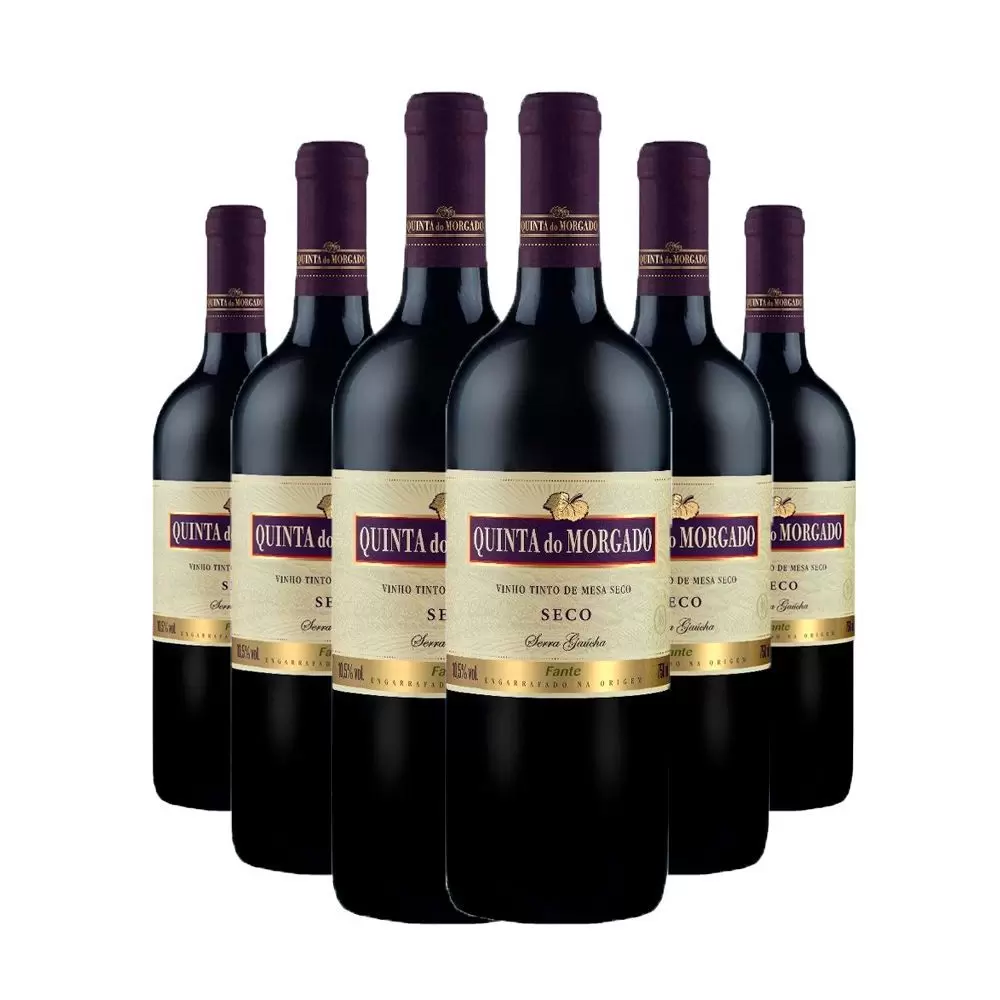
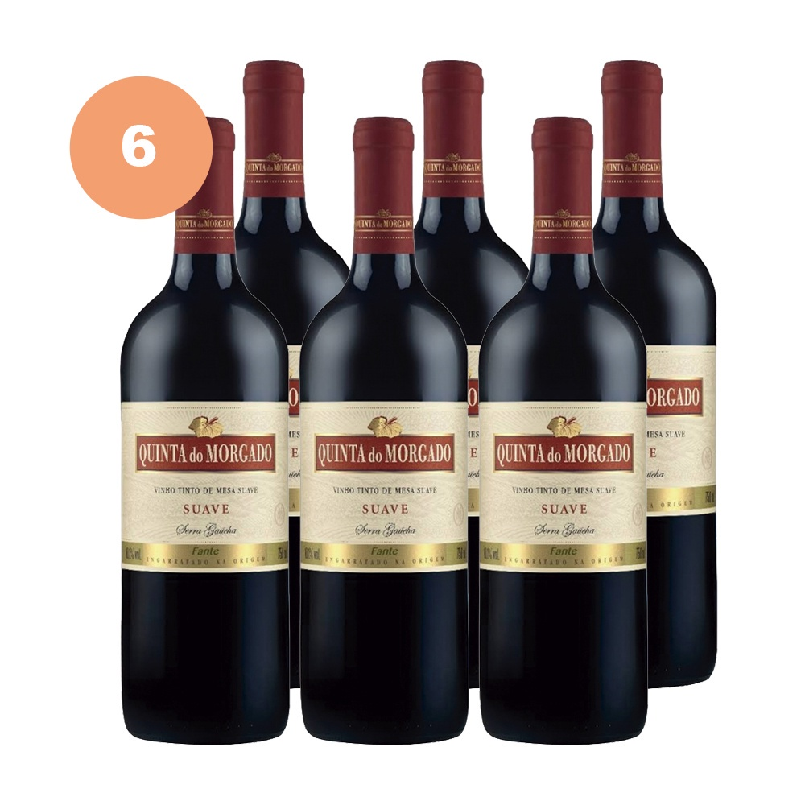

|  | Elaborado com as variedades de uvas Isabel e Bordô, apresenta uma coloração vermelho rubi com reflexos violáceos,
|
|  | Elaborado pela variedade de uva Cabernet Sauvignon, o Quinta do Morgado Cabernet Sauvignon Suave possui em seu visual uma coloração vermelho rubi,
|